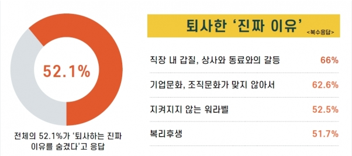
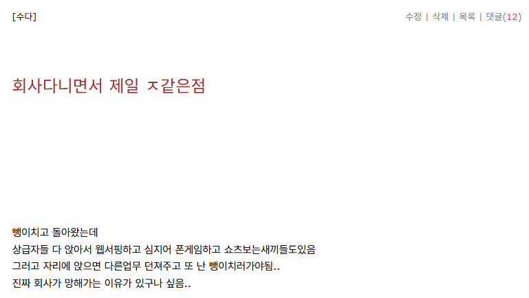

의외로 연봉이 아닌
'월급루팡 상급자들 때문에'
이에 대한 불만 토로하면
'상급자는 책임지는 자리'
'상급자만이 할 수 있는 업무가 있다'
'그 사람들도 다 막내 때 다 그렇게 했다'
이런 말로는 요즘 젊은 사람들 설득이 안 됨
게다가 실제로 사고 터지면 책임져야할 관리자인 상급자들이 아닌 실무자한테 화살이 날아오는 경우가 많고
평소에 월루하던 책임, 결정의 자리인 상급자들이 필요할 땐 책임소재에서 쏙 빠지는거 한 두번 겪게 되면 정 떨어져서 회사 나가게 됨
쌩신입 때는 아무것도 모르고 그냥 다니다가 아는게 많아지는 대리급 레벨에서 이직, 퇴사자 속출하는게 이런 이유가 큼
댓글
수집 당시 최근 댓글 10개
하루에세번똥싸 · 3 시간 전
나만 왜이렇게 한가한가 싶으면 괜찮은 루팡인거냐??? ㅋㅋㅋㅋㅋㅋ 왜케 다들 바쁘지ㅜㅜ
진흙에도꽃은펴 · 4 시간 전
ㅋㅋㅋㅋㅋㅋ
에테르 · 4 시간 전
사원 3년 / 팀장 5년 / 코파운더 1년 / 대표 3년 대충 이 정도 경력인데, 올라가면 올라갈수록 순수 근무시간을 떠나서 그냥 ‘일을 할 수 있는 시간’ 자체가 늘어나는 기분임. 사원 때는 기본적으로 9 to 6이고, 해봤자 가끔 야근이나 특근 정도였음. 팀장 되니까 일 있으면 10시 퇴근, 11시 퇴근도 하게 되고 코파운더 때는 새벽 퇴근도 하고 대표 되고 나니까 주말 근무는 그냥 자연스러운 일이 됨. 물론 사원 입장에서는 윗사람이 놀고 있는 것처럼 보일 수도 있음. 근데 사원이 퇴근한 뒤에 일하는 사람이 있고, 주말에 문제 터졌을 때 전화받는 사람이 있고, 결정해야 할 일이 생겼을 때 대신 판단해야 하는 사람이 있다면 대부분 그게 윗사람임. 당연히 라인 잘 타서 자리만 차지하고 꿀 빠는 사람도 있겠지. 근데 윗사람이 한가해 보이는 것과 실제로 한가한 건 전혀 다른 문제라는 것도 알아줬으면 좋겠음. 결국 고객사든 회사든 더 윗선이든 가서 깨지고 수습해야 하는 건 책임자고, 그래서 그 자리에 있는 거라고 생각함. 물론 책임져야 할 순간에 실무자 뒤에 숨어버리는 상급자라면 욕먹어도 할 말 없고. 근데 그것과 ‘윗사람은 하는 일 없이 놀면서 돈만 더 받는다’는 건 다른 얘기라고 봄. 결국 각 자리에 직접 있어봐야 그 자리가 뭐가 힘든지 알게 되는 것 같음.
베지밀오렌지 · 4 시간 전
ㅇㄱㅆㄹㅇ 회사에서 놀아도 상급자는 집가서 완전히 못놈
에테르 · 3 시간 전
출근전에 장실에있을때 카톡오면 답장하고 퇴근하고 술먹다가 전화오면 맨정신인척 받고 주말에 연락오면 답장하고 업무보고 누구 연차쓰면 대타로 가서 일하고 이런말하면 '나도 그거 다 하는데?'라고 하는 애들 있을 수 있는데 비율로 놓고보면 직원일때 저런게 많겠냐 위로 올라갔을때 저런게 많겠냐 싶음 무튼 고생이많다 다들
누에 · 3 시간 전
엑셀 팡숀? 쓰지마세요
레이셀 · 2 시간 전
과장쯤 되면 손이 퇴화해서 지 손으로 택배를 못붙임
디쿠벵두 · 1 시간 전
불합리하긴한데 꼬우면 먼저들어왔어야함 꼬우니까 그만둔건데 그만두면 지손해임 계획이있는상태에서 더 좋은 방향성을 갖고 그만둬야 의미가있는거지 그냥 저이유로 꼴보기싫다고 그만두는건 손해지 인생에 정답은없는데 나에게 이득이 되는방향으로 살고싶다면 저런이유로 그만두면안됨
오니기리죠 · 1 시간 전
걍 위치에 따라 보이는 만큼 보는거임.
원소번호11번 · 1 시간 전
걍 존나 기성세대가 책임지는 꼬라지를 배우질 못함.